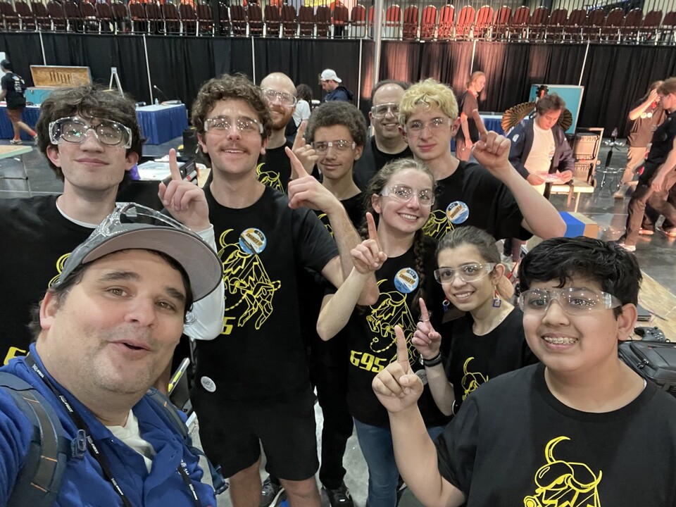

I had the incredible opportunity to volunteer as a judge at the South Florida Regional 2023 FIRST Robotics Competition. Meeting teams from Panama, Colombia, Pittsburgh, Ohio, and across Florida was inspiring—their creativity, critical thinking, and problem-solving skills in building their robots were remarkable.
Winning Teams
- Team 695 – Bison Robotics (Beachwood, Ohio)
- Team 179 – Children of the Swamp (Riviera Beach, Florida)
- Team 3653 – Botcats (Hollywood, Florida)
Runner-Up Teams
- Team 5472
- Team 180
- Team 7652
Special Awards
- MacGyver Award: Team 8581 – PizzaByte Robotics (Panama)
- Gracious Professionalism Award: Team 59 – RamTech (Miami, Florida)
- Volunteer of the Year: Stacey Jones
If you've never volunteered at a FIRST competition, I highly recommend it. There's nothing quite like seeing young people pour their hearts into STEM projects, working together to solve complex engineering challenges. The energy is electric, and you walk away reminded of why supporting the next generation of makers and engineers matters.
Related
-
Why You Should Attend Maker Faire Miami 2023
The same season, in maker form.
-
Restoring a 1984 Tomy Omnibot — Part 4: It's Alive
My own robotics build for Maker Faire Miami 2026.